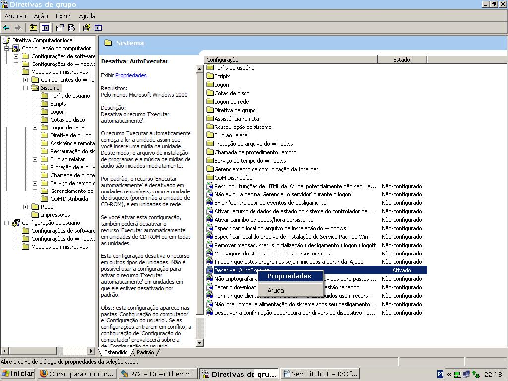

Proteja-se Contra Virus(Disable USB Autorun)
by Gilberto C. Andrade on 18 Julho 2009
Meus amigos professores sempre reclamam que não conseguem manter seus PCs/NoteBooks livres de vírus. E uma queixa maior é a infestação por uso de dispositivos usb (pen drive). Encontrei uma dica excelente sobre o assunto.
Procuro retratar a mesma dica, mas para os brasileiros:
A melhor forma de manter longe a auto instalação/execução de virus de USB em seu Desktop é desabilitando a característica de auto-execução para esses dispositivos. Irei demonstrar como fazê-lo:
- clique no botão Iniciar, depois escolha Executar… e na caixa de texto digite “gpedit.msc” sem aspas
- escolha Configuração do Computador -> Modelos Administrativos -> Sistema
 - entre os itens escolha Desativar AutoExecutar e clique duas vezes nele
- clique em “Ativado”, então em “Desativar Executar automaticamente em:” selecione “Todas as unidades”

Esta configuração o protegerá da invasão automática de vírus por esse ou outro dispositivo, assim que você o conectar ao PC. A proteção se completa com uma solução contra vírus, ou seja, um antivírus. Recomendo um de uso pessoal - AVG - sem custo algum.